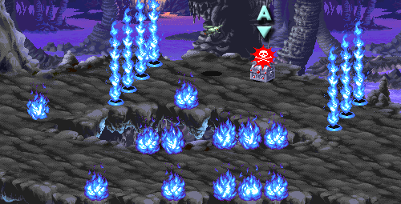

| STAGE 9-B Lost World |
| 잃어버린 세계 |
| (일어판 - ロスト·ワ―ルド : 로스트 월드) |
화염의 대지와는 정반대로 이곳은 얼어붙은 세계다.
구조는 거의 비슷하다.
구조는 거의 비슷하다.
전반부 |
화염의 세계와는 반대로 푸른색이 주류를 이룬다.

두 갈래길로 나뉜다.
아래쪽으로 가면 셰도우 엘프가 나온다.
위쪽의 얼음트랩은 자이언트 비틀을 제거시키면 사라진다.
투척무기로 처리해도 되고 라파엘의 동굴에서 언급했던 방법을 써도 된다. 스테이지 시작지점에서 맨위로 붙으면 자동으로 위치가 맞춰지니 참고하기 바란다.
아니면 아래쪽으로 상자와 동일한 y축 위치까지 간 다음 처음 위치로 돌아가면 자이언트 비틀이 알아서 사라지고 트랩이 사라지니 이런 방법을 이용해도 무방하다.
| 랜덤 아이템 | 고정 아이템 | 클래스별 아이템 | |||||||
|
|||||||||
| 드워프가 격파시 | |||||||||
등장하는 적 - 약 24초가 지나면 도망간다.
| 1인 | 오른쪽에서 셰도우 엘프 x2 → 한명만 남으면 왼쪽에서 셰도우 엘프 x2 (6회 이상 반복) |
| 2인 | 1인 플레이와 똑같다. |
| 3인 | 1인 플레이와 똑같다. |
| 4인 | 1인 플레이와 똑같다. |
여기까지 오면 화면이 더이상 스크롤 되지 않고 셰도우 엘프와 트로글로다이트가 나온다.
상자 B
| 랜덤 아이템 | 고정 아이템 | 클래스별 아이템 | |||||||
|
|||||||||
| 드워프가 격파시 | |||||||||
등장하는 적 - 약 1분이 지나면 도망간다. 전부 물리치거나 도망쳐야 다음으로 진행할 수 있다.
| 1인 | 셰도우 엘프 x4 → 2명만 남으면 왼쪽에서 트로글로다이트 x1 + 오른쪽에서 트로글로다이트 x1 → 총 2명만 남으면 오른쪽에서 창든 셰도우 엘프 x4 → 왼쪽에서 트로글로다이트 x1 + 오른쪽에서 트로글로다이트 x1 → 총 2명만 남으면 왼쪽에서 창든 셰도우 엘프 x4 → 총 1명만 남으면 오른쪽에서 창든 셰도우 엘프 x4 → 왼쪽에서 창든 셰도우 엘프 x4 |
| 2인 | 1인 플레이와 똑같다. |
| 3인 | 셰도우 엘프 x4 → 2명만 남으면 왼쪽에서 트로글로다이트 x1 + 오른쪽에서 트로글로다이트 x2 → 총 2명만 남으면 오른쪽에서 창든 셰도우 엘프 x4 → 총 1명만 남으면 왼쪽에서 트로글로다이트 x1 + 오른쪽에서 트로글로다이트 x2 → 총 2명만 남으면 왼쪽에서 창든 셰도우 엘프 x4 → 총 1명만 남으면 오른쪽에서 창든 셰도우 엘프 x4 → 왼쪽에서 창든 셰도우 엘프 x4 |
| 4인 | 셰도우 엘프 x4 → 2명만 남으면 왼쪽에서 트로글로다이트 x2 + 오른쪽에서 트로글로다이트 x2 → 총 2명만 남으면 오른쪽에서 창든 셰도우 엘프 x4 → 총 1명만 남으면 왼쪽에서 트로글로다이트 x1 + 오른쪽에서 트로글로다이트 x2 → 총 2명만 남으면 왼쪽에서 창든 셰도우 엘프 x4 → 총 1명만 남으면 오른쪽에서 창든 셰도우 엘프 x4 → 왼쪽에서 창든 셰도우 엘프 x4 |
후반부 |
역시 두 갈래길로 나뉜다.
아래쪽으로 가면 트로글로다이트가 튀어나온다.
동그랗게 생긴 구멍은 밟으면 터지는 트랩이다.
바로 터지는건 이나고 잠시 깜빡이다가 터지며 닿으면 얼어버린다.
| 랜덤 아이템 | 고정 아이템 | 클래스별 아이템 | |||||||
|
|||||||||
| 드워프가 격파시 | |||||||||
등장하는 적 - 약 36초가 지나면 도망간다. 스테이지 진행과 상관은 없다.
| 1인 | 왼쪽에서 트로글로다이트 x1 + 오른쪽에서 트로글로다이트 x1 → 한마리만 남으면 왼쪽에서 트로글로다이트 x1 + 오른쪽에서 트로글로다이트 x1 (이런 패턴으로 총 8마리 등장) |
| 2인 | 1인 플레이와 똑같다. |
| 3인 | 1인 플레이와 똑같다. |
| 4인 | 1인 플레이와 똑같다. |
|
이번엔 차가운 몬스터가 등장한다.
상자 D는 2인 이상 플레이시에만 등장한다.
상자 D - 2인 이상 플레이시에만 등장한다.
| 랜덤 아이템 | 고정 아이템 | 클래스별 아이템 | |||||||
|
|||||||||
| 드워프가 격파시 | |||||||||
상자 E
| 랜덤 아이템 | 고정 아이템 | 클래스별 아이템 | |||||||
|
|||||||||
| 드워프가 격파시 | |||||||||
간단한 공략 - 자세한 공략은 보스 공략을 보도록 한다. ▶ 보스 공략 보기
이번에는 닿기만 해도 얼면서 쓰러진다. 불 내성의 반지 같은 공격을 무효화 시키는 아이템이 없고 헬 하운드 대신 가고일이 나오기 때문에 자체 난이도는 좀 더 높다고 할 수 있다.
그러나 대신 LB오일에 무척 취약해서 최소 5개에 끝낼 수 있다.
샐러맨더의 몸체가 지상과 가까워 졌을 때 불꽃 2개가 맞도록 던지면 되는데 보통의 경우 기회가 잘 안나오므로 한번 쓰러졌다가 일어날 때 던지는게 가장 무난하다.
화염의 검이나 폭풍의 검을 이용하거나 완드류 혹은 공격주문을 이용하거나 클레릭은 이프리트의 항아리를 써서 쓰러뜨리면 된다.
콜드 완드, 아이스 스톰, 매직 유저의 컨주어 엘리멘탈(오른쪽), 클라우드 킬은 통하지 않는다.
이번에는 닿기만 해도 얼면서 쓰러진다. 불 내성의 반지 같은 공격을 무효화 시키는 아이템이 없고 헬 하운드 대신 가고일이 나오기 때문에 자체 난이도는 좀 더 높다고 할 수 있다.
그러나 대신 LB오일에 무척 취약해서 최소 5개에 끝낼 수 있다.
샐러맨더의 몸체가 지상과 가까워 졌을 때 불꽃 2개가 맞도록 던지면 되는데 보통의 경우 기회가 잘 안나오므로 한번 쓰러졌다가 일어날 때 던지는게 가장 무난하다.
화염의 검이나 폭풍의 검을 이용하거나 완드류 혹은 공격주문을 이용하거나 클레릭은 이프리트의 항아리를 써서 쓰러뜨리면 된다.
콜드 완드, 아이스 스톰, 매직 유저의 컨주어 엘리멘탈(오른쪽), 클라우드 킬은 통하지 않는다.
▶ 클리어 후 레벨이 올라가는 클래스 : 파이터, 클레릭, 시프
상점 |
Copyright ⓒ 2007-2008 Crassus & Legon. All rights reserved.